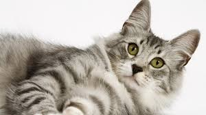

Cat in Grass

This cat is really just wonderful and it shows how at peace one can be when they embrace nature. Essentially, by what one can see by looking at this wonderful picture of a cat being in a field of grass is that one can actually and completely be on top of such a field of grass and it is only natural to, during that on-the-grass experience, feel as though one is in nature.
Lying-down Cat
Here is a beautiful gray cat that is lying down ever so peacefully, once again illustrating the amount of tranquility that, as a cat, one can achieve just by following the advice of their feline companions. As you can see as well in the photo, this cat looks very much fluffy because of its fluffy fur, so that is also a good thing that one can learn from; always make sure to have good hygiene.
Pizza Cat
Pizza is good, very good, and this cat is good enough to admire the pizza and show how great a cat and pizza can live in harmony. This is the pizza cat.
Cat that Looks like a Cloud

This is a very special cat because it is white and very floofy so that it looks like a cloud and it could possibly be levitating or flying so that is amazing and wonderful, here is a great cat, look at it!
Rion Cat
This is Rion cat, it is Rion. Say hello to Rion because he wants to be said hello to and that is a good thing to have been said to you because it is a friendly greeting of frendliness.
Dinner
This is what looks to be, to our dear friend, spacebar, a thing that is called dinner, because it is a small one, however, it is not a cat, so it sure is strange that it wound up here, is it not?